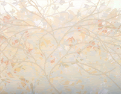

X CONTEMPORARY
Feria Miami Beach X CONTEMPORARY
Feria Miami Beach X CONTEMPORARY
con Salomon Arts Gallery
Del 30 de noviembre al 4 de diciembre de 2016
Enriqueta Hueso • Kenryo Hara • Pilar Palomares
Del 30 de noviembre al 4 de diciembre de 2016
Enriqueta Hueso • Kenryo Hara • Pilar Palomares

TUTTE LE ESTRADE PORTANO A ROMA
en colaboración con la Galería O+O - Valencia
UNA EVA QUÍNTUPLE Y LA GRAN MANZANA
Five fold EVA and the Big Apple
Exposición en Salomon Art Gallery de New York
Del 27 de marzo al 20 de abril de 2013

Five fold EVA and the Big Apple
Exposición en Salomon Art Gallery de New York
Del 27 de marzo al 20 de abril de 2013
ARTISTAS DEL MEDITERRANEO
La Galería O+O forma parte de la exposición “Artistas del Mediterráneo”, que tendrá lugar del 23 de marzo al 5 de abril de 2012 en la Embajada de Egipto en Roma.

La Galería O+O forma parte de la exposición “Artistas del Mediterráneo”, que tendrá lugar del 23 de marzo al 5 de abril de 2012 en la Embajada de Egipto en Roma.
| VER VIDEO |
GALERIA CASSIOPEA
EXPOSICION INTERNACIONAL DE ARTE CONTEMPORANEO
"TEMPUX FUSIT: DE PASO"
Inauguración: 18 de mayo de 2012

EXPOSICION INTERNACIONAL DE ARTE CONTEMPORANEO
"TEMPUX FUSIT: DE PASO"
Inauguración: 18 de mayo de 2012

| VER VIDEO |
IV FESTIVAL INTERNACIONAL DE VIDEOARTE
CAMAGÜEY, CUBA

La Galeria O+O ha enviado los proyectos de los videoartistas, Domingo Sarrey - Sergio Belinchón - Antonio Ortuño y Jonathan Bellés siendo seleccionados para este festival.

El videoartista Jonathan Bellés, presentado por la Galeria O+O en el festival de video de Cuba, ha ganado el Premio Crea 2011
FELLINI GALLERY
SHANGHAI
exposición 10 de mayo de 2010
Galería Artitude de París en colaboración con la galeria Fellini
Queridos amigos, en China todo es posible, pero todo es complejo, es necesario adaptar... Finalmente, nuestra exposición llevará a cabo en la Galería de FELLINI. 339 Changle Lu # 15 que con sus 600 m2 en 3 plantas está disponible del 10 al 16 de mayo. El vernissage se celebrará el lunes, 10 de mayo a las 16:30 con la efectiva presencia del Señor Thierry Mathou Cónsul General de Francia en Shanghai. Al día siguiente tendremos la apertura de arte-SHANGHAI 2010. Galeria Fellini
 |
| Faba |
 |
| Enriqueta Hueso |
EXPOSICION EN NEW YORK
RAINFOREST ART FOUNDATION, "Green movement in art"
Del 2 al 30 de abril de 2009

 |
| Enriqueta Hueso |
 |
| Miquel San Román |
 |
| Mónica Cerrada |
 |
| Julián Ortiz |


{kind=link}
{kind=link}
{kind=link}
{kind=link}
{kind=link}
{kind=link}
CONTAMINIAZIONI CULTURALI
Julio 2009


contaminazioni culturali - mostra collettiva itinerante
Galleria Metamorfosi, Reggio Emilia - galleria Calma, Perugia - Festival Luna d'estate, Torgiano - Museo Storico della Fanteria, Roma
GALLERIA TARTAGLIA ARTE (ITALIA)
MAYO 2008

La Galleria Tartaglia Arte e VISTA CentrodArte e Comunicazione, in collaborazione con O+O Oriente & OccidenteGestiòn Cultural (Valencia) e Associazione Centro D'arte Minerva,con il patrocinio del Comune di Cortona, presentano una mostra collettiva itinerante.

JIA ART GALLERY (TAIWAN)
MARZO 2008
O+O Gestión Cultural presenta una exposición colectiva en la Jia Art Gallery de Taiwan


{kind=link}

| NOTICIA PRENSA |
INTERNATIONAL ECOLOGY EXHIBITION
KEELUNG - TAIWAN
Enero 2008
Exposición Cultural En Taiwan en Intercambio Internacional con Tsai-Mo Totem Art Exhibition Grupo de Arte Internacional de Tsai